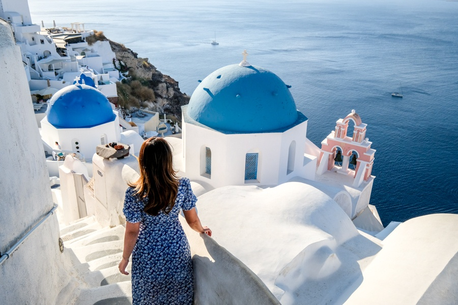

Hello, fellow travel enthusiasts! I'm Isa, and today, I'm thrilled to take you on a virtual journey to the enchanting island of Santorini, Greece. Nestled in the heart of the Aegean Sea, Santorini is a place of pure magic, where every moment feels like a dream come true.
Arrival in Santorini
My adventure began as I touched down on this remarkable island. The moment I stepped off the plane, I was greeted by the warm Mediterranean breeze and the invigorating scent of salt in the air. The excitement was palpable, and I couldn't wait to explore every nook and cranny of this picturesque paradise.

Astonishing Sunsets in Oia
One of the highlights of Santorini is undoubtedly the stunning sunsets in Oia. I made sure to arrive early, securing a coveted spot to witness this daily spectacle. As the sun dipped below the horizon, the sky transformed into a breathtaking canvas of warm hues, casting a mesmerizing glow over the iconic white-washed buildings. It was a moment of sheer serenity, and I felt truly fortunate to be part of it.
Exploring Fira's Charm
The island's capital, Fira, was another delightful discovery. The charming cobblestone streets lined with quaint boutiques and cafes invited exploration. I wandered aimlessly, indulging in local delicacies and admiring the unique architecture that defines this captivating town. Fira's bustling energy was infectious, and I couldn't help but be enchanted by its charisma.
Some Facts About The Island
| Category | Fact |
|---|---|
| Location | Nestled in the Aegean Sea |
| Capital | Fira |
| Population | Approximately 15,500 |
| Official Language | Greek |
| Currency | Euro (€) |
| Time Zone | Eastern European Time (EET, UTC+2) |
| Climate | Mediterranean with hot, dry summers and mild, wet winters |
| Notable Attractions | Oia, Fira, Akrotiri, Perissa Beach |
| Cuisine | Delicious Greek dishes including moussaka, souvlaki, and baklava |
| Transportation | Taxis, buses, and rental cars available for getting around the island |
Santorini's Unique Beaches
Santorini boasts some of the most unique beaches I've ever encountered. Perissa Beach, with its jet-black volcanic sands, was a sight to behold. I spent hours lounging under the sun, the dark sands absorbing the heat like a warm embrace. Kamari Beach, on the other hand, offered a striking contrast with its pebbled shore and crystal-clear waters. Each beach had its own distinct charm, and I couldn't resist taking a dip in the refreshing Aegean Sea.
Reflecting on the Journey
As my time in Santorini came to an end, I couldn't help but reflect on the incredible experiences I had collected. From the captivating sunsets to the rich history and mouthwatering cuisine, Santorini had left an indelible mark on my heart.
Closing Thoughts
Santorini, Greece, is a destination that truly lives up to its reputation as a traveler's paradise. Its unique blend of natural beauty, history, and culture make it a must-visit for anyone seeking a magical escape. My journey to this Greek gem was a dream come true, and I hope that through my words and photos, you too can experience a slice of the enchantment that Santorini has to offer. Until the next adventure, happy travels!